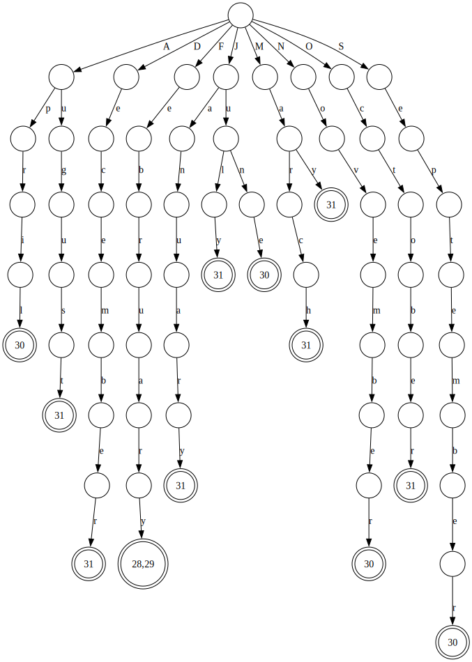
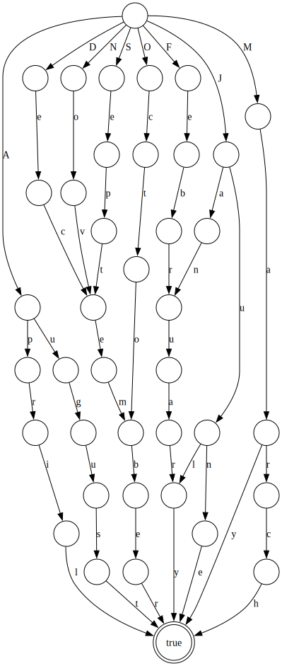
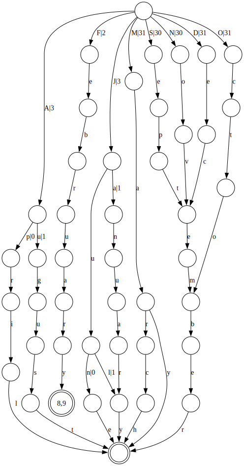
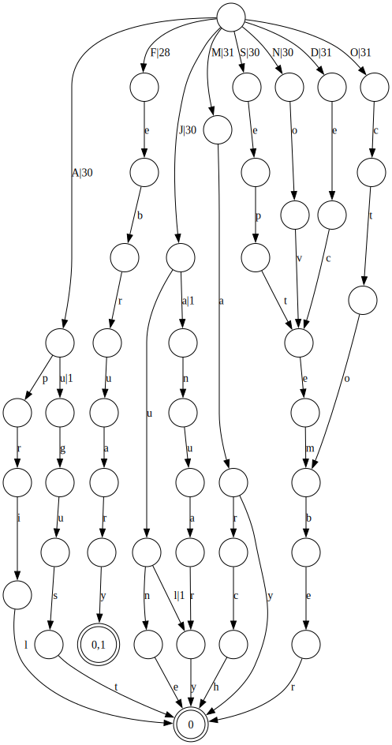

The Java source for this lesson is available at http://github.com/msfroh/lucene-university/tree/main/src/main/java/example/foundations/FiniteStateTransducers.java.
Lucene’s term dictionary is implemented using “finite state transducers” (FSTs). This is a compact way of representing the dictionary of terms in the index. A finite state transducer is like a finite state automaton, but it can also point to some output. If a finite state automaton is like a “set” that identifies whether a given input is included in the dictionary, a finite state transducer is like a “map” that points to the postings for a given term in the dictionary.
For details on how Lucene uses FSTs, check out Mike McCandless’s blog post at https://blog.mikemccandless.com/2010/12/using-finite-state-transducers-in.html.
Another great resource is the blog post on transducers by Andrew Gallant at https://burntsushi.net/transducers/.
In particular, that blog post references the same papers that I dig into in this lesson, and has a pretty similar
overall structure. Andrew Gallant wrote the standard fst library for Rust, which was
tweaked for the FST implementation in
Tantivy and is used for the full-text search indexes in
LanceDB. (Thank you to Prateek Rungta for reminding me about that blog post!)
The FST implementation in Lucene is inspired by the paper “Direct Construction of Minimal Acyclic Subsequential Transducers” by Mihov and Maurel (available from Mihov’s website at https://lml.bas.bg/~stoyan/lmd/Publications.html).
That paper builds on the earlier paper, “Incremental Construction of Minimal Acyclic Finite-State Automata” by Daciuk, Mihov, Watson, and Watson (https://aclanthology.org/J00-1002.pdf). This lesson will follow the approach from this earlier paper, including starting with a trie data structure and then moving on to the algorithm they use to construct a minimal automaton. From there, we’ll generalize from finite state automata to finite state transducers, following the approach from the Mihov and Maurel paper.
package example.foundations;
import java.util.ArrayList;
import java.util.Collections;
import java.util.Comparator;
import java.util.HashMap;
import java.util.HashSet;
import java.util.Iterator;
import java.util.List;
import java.util.Map;
import java.util.Objects;
import java.util.Set;
import java.util.SortedMap;
import java.util.TreeMap;
import java.util.function.Supplier;
import java.util.stream.Collectors;
public class FiniteStateTransducers {The examples below will construct acyclic graphs that operate on strings. At a foundation, the graphs will have nodes representing states, with edges representing transitions between states. Each edge will be labeled with a character that triggers the transition. You look up a string in the graph by traversing character by character until you either find a character with no valid transition or you reach the end of the string. Reaching the end of the string doesn’t necessarily mean that the string is in the graph, because we may just have reached a prefix of a longer string that is in the graph. If the last state we reach has a value associated with it, we’ll assume it’s an accepting state, meaning that the string is in the graph.
We will be able to use the following Node class to represent a node in any digraph. We will reuse it across multiple examples.
private static class Node<T> {
private final int nodeNum;
private boolean acceptingState;
private final List<T> values;
private final SortedMap<Character, Node<T>> outboundEdges;
public Node(int nodeNum, boolean acceptingState, List<T> values) {
this.nodeNum = nodeNum;
this.outboundEdges = new TreeMap<>();
this.acceptingState = acceptingState;
this.values = values;
}
@Override
public boolean equals(Object o) {
if (o == null || getClass() != o.getClass()) return false;
Node<T> node = (Node<T>) o;
if (outboundEdges.size() != node.outboundEdges.size()) {
return false;
}
Iterator<Map.Entry<Character, Node<T>>> iterator = outboundEdges.entrySet().iterator();
Iterator<Map.Entry<Character, Node<T>>> otherIterator = node.outboundEdges.entrySet().iterator();
while (iterator.hasNext()) {Nodes have keys in order, so we can compare them directly.
Map.Entry<Character, Node<T>> childEntry = iterator.next();
Map.Entry<Character, Node<T>> otherEntry = otherIterator.next();
if (childEntry.getKey().equals(otherEntry.getKey()) == false ||
childEntry.getValue().nodeNum != otherEntry.getValue().nodeNum) {
return false; // Mismatch found
}
}
return true;
}
@Override
public int hashCode() {
return Objects.hash(values, outboundEdges.keySet());
}
}The following class will handle common functionality for directed acyclic graphs (DAGs) that we will implement
below. In particular, the search logic will be common across all implementations, so we can reuse that. Also,
we include the toDot method to generate a DOT representation of the graph, which can be used for visualization.
private static abstract class DirectedAcyclicGraph<T> {
private int counter = 0; // Used to assign unique node numbers
protected final Node<T> root;
protected DirectedAcyclicGraph() {
this.root = createNode();
}
protected Node<T> createNode() {
return new Node<>(counter++, false, new ArrayList<>());
}
public abstract void insert(String key, T value);
public List<T> search(String key) {
Node<T> currentNode = root;
for (char c : key.toCharArray()) {
currentNode = currentNode.outboundEdges.get(c);
if (currentNode == null) {
return null; // Key not found
}
}
if (currentNode.acceptingState) {
return currentNode.values;
}
return null; // Key found, but not an accepting state
}
public String toDot() {
StringBuilder sb = new StringBuilder();
sb.append("digraph Trie {\n");
toDotHelper(root, sb, new HashSet<>());
sb.append("}\n");
return sb.toString();
}
private static <T> void toDotHelper(Node<T> node, StringBuilder sb, Set<Integer> visited) {
if (visited.contains(node.nodeNum)) {
return; // Avoid adding redundant edges.
}
visited.add(node.nodeNum);
if (node.acceptingState) {
String[] values = node.values.stream()
.map(Object::toString)
.toArray(String[]::new);
sb.append(" \"").append(node.nodeNum).append("\" [shape=doublecircle,label=\"").append(String.join(",", values)).append("\"];\n");
} else {
sb.append(" \"").append(node.nodeNum).append("\" [shape=circle,label=\"\"];\n");
}
for (Map.Entry<Character, Node<T>> entry : node.outboundEdges.entrySet()) {
char c = entry.getKey();
Node<T> nextNode = entry.getValue();
sb.append(" \"").append(node.nodeNum).append("\" -> \"").append(nextNode.nodeNum).append("\" [label=\"")
.append(c).append("\"];\n");
toDotHelper(nextNode, sb, visited);
}
}
}A trie is a tree-like data structure that stores a dynamic set of strings, where each edge represents a character in the string. Tries are particularly useful for prefix matching and can be used to implement autocomplete. They were also used for the T9 text input system on older mobile phones, where each key corresponds to multiple letters.
For demonstration purposes, I’ll take the object-oriented approach to implement a simple trie in Java. We can more efficiently pack the trie into arrays of states and transitions, but this implementation should be easier to read.
Note that tries will reuse common prefixes, regardless of the order in which the keys are inserted. For each inserted string, we add prefixes that are not present and reuse prefixes that are. (That’s essentially what the computeIfAbsent call is doing.)
private static class Trie<T> extends DirectedAcyclicGraph<T> {
public void insert(String key, T value) {
Node<T> currentNode = root;
for (int i = 0; i < key.length(); i++) {
char c = key.charAt(i);If the character is not present, create a new node for it.
currentNode = currentNode.outboundEdges.computeIfAbsent(c, k -> createNode());
if (i == key.length() - 1) {If this is the last character in the key, mark the node as an accepting state and set its value.
currentNode.acceptingState = true;
currentNode.values.add(value);
}
}
}
}We can test out the trie implementation by inserting some keys and values, then searching for them.
private static void trieMain() {Insert months of the year into the trie, with the number of days in each month as the value.
Trie<Integer> trie = new Trie<>();
trie.insert("January", 31);
trie.insert("February", 28);
trie.insert("February", 29);
trie.insert("March", 31);
trie.insert("April", 30);
trie.insert("May", 31);
trie.insert("June", 30);
trie.insert("July", 31);
trie.insert("August", 31);
trie.insert("September", 30);
trie.insert("October", 31);
trie.insert("November", 30);
trie.insert("December", 31);Search for some keys
System.out.println("Search for 'March': " + trie.search("March")); // Should print [31]
System.out.println("Search for 'February': " + trie.search("February")); // Should print [28,29]
System.out.println("Search for 'Smarch': " + trie.search("Smarch")); // Should print null (not found)Print the trie in DOT format for visualization If you have Graphviz installed, you can visualize the trie by running:
dot -Tpng trie.dot -o trie.png
System.out.println(trie.toDot());
}The rendered trie will look like this: 
Let’s look at the approach from the paper “Incremental Construction of Minimal Acyclic Finite-State Automata” by Daciuk, Mihov, Watson, and Watson. In that paper, they describe two algorithms – one that acts on sorted input and one that acts on unsorted input. The sorted input algorithm is simpler, so we’ll focus on that.
Note that this algorithm only produces a finite-state automaton (FSA), not a finite-state transducer (FST). So, our insert method will not store any values associated with the keys. It will only build the structure of the automaton.
Before diving into the algorithm, let’s look at the graph for the months of the year and compare to the output of the trie above. Note that we are able to reuse the common suffixes of the months, such as “ember” in “September”, “November”, and “December”. The shape of the graph is more compact than the trie.

private static class DaciukMihovFiniteAutomaton extends DirectedAcyclicGraph<Boolean> {
private String previousWord = null;
private final Map<Node<Boolean>, Node<Boolean>> registry = new HashMap<>();
@Override
public void insert(String key, Boolean value) {
if (previousWord != null && key.compareTo(previousWord) < 0) {
throw new IllegalArgumentException("Keys must be inserted in sorted order.");
}
String commonPrefix = commonPrefix(key);
Node<Boolean> commonPrefixState = getState(commonPrefix);
if (commonPrefixState.outboundEdges.isEmpty() == false) {The most important piece of this algorithm is that we minimize the automaton as we build it. When we add a new key, we minimize the suffix of the previously-inserted key, but only starting from the end of the common prefix. Basically, we reuse prefixes first (with the code above), and then we reuse suffixes via this replaceOrRegister method.
There are three cases where commonPrefixState’s outbound edges are empty:
All three of these cases can be thought of as variants of the last case. The first one can be thought of as though we previously inserted the empty string, which is a prefix of everything. In the second case, any string is a prefix of itself.
What makes these three cases interesting is that they’re also the cases that result in a new accepting state being created. If the second and third cases don’t happen (i.e. no input is a prefix of any other input), then the automaton will have a single accepting state created on the first insert.
replaceOrRegister(commonPrefixState);
}Append the newly-added suffix to the end of the common prefix without any further reuse. We will find opportunities to reuse nodes for this suffix either on the next insert or when we call finish().
Essentially, we’re growing a new straight-line branch from the end of the common prefix (which is what a trie does all the time). On the later call to replaceOrRegister, we’ll (potentially) fold the end of the branch back into the automaton, reusing nodes that have the same suffix.
String currentSuffix = key.substring(commonPrefix.length());
Node<Boolean> lastState = commonPrefixState;
for (char c : currentSuffix.toCharArray()) {
Node<Boolean> newState = createNode();
lastState.outboundEdges.put(c, newState);
lastState = newState;
}Mark the last state as an accepting state
lastState.acceptingState = true;
previousWord = key;
}
public void finish() {We need to make sure that the last state that we inserted gets minimized as well. For example, when inserting the months of the year in sorted order, the last string will be “September”, which has no common prefix with any other months. In that case, the insert method would have added it as a long skinny branch from the root. By calling replaceOrRegister, we’re able to find the common “ember” suffix that can be shared with “November” and “December”.
replaceOrRegister(root);
}
public void insert(String key) {Overloaded method to insert without a value, defaulting to true
insert(key, true);
}Find the longest prefix of the key that is already in the automaton. If the automaton is empty or the first character of the key is not present, we’ll return an empty string.
private String commonPrefix(String key) {
StringBuilder sb = new StringBuilder();
Node<Boolean> currentNode = root;
for (int i = 0; i < key.length(); i++) {
char c = key.charAt(i);
Node<Boolean> nextNode = currentNode.outboundEdges.get(c);
if (nextNode == null) {
break; // No more common prefix
}
sb.append(c);
currentNode = nextNode; // Move to the next node
}
return sb.toString();
}Given some prefix present in the automaton, return the node that corresponds to that prefix. If the prefix is not present in the automaton, we’ll throw an exception. In other words, this method must only be called using the value returned by the commonPrefix above.
private Node<Boolean> getState(String prefix) {
Node<Boolean> currentNode = root;
for (char c : prefix.toCharArray()) {
currentNode = currentNode.outboundEdges.get(c);
if (currentNode == null) {Since we always call this method after computing the common prefix, we should never reach a point where the prefix is not found.
throw new IllegalStateException("Prefix not found: " + prefix);
}
}
return currentNode;
}This method is the key to the algorithm. While the insert method reuses prefix nodes, just like in a trie, this method reuses common suffix nodes. For example, the first string we insert generates an “accept” node that has no outbound edges. We can reuse that node as the accept state for all inputs that are not substrings of other inputs. Working backwards, any node that points to the accept node can be reused for any string that has the same final character. In the case of the months of the year, several strings end with “y”, so we can reuse the node that transitions to the accept node on input “y” on the paths for “January”, “February”, and “July”.
To understand the method, note the recursive call at the beginning. We work from the end of the automaton back toward the root.
private void replaceOrRegister(Node<Boolean> state) {
Character lastChar = state.outboundEdges.lastKey();
Node<Boolean> child = state.outboundEdges.get(lastChar);
if (child.outboundEdges.isEmpty() == false) {
replaceOrRegister(child);
}
Node<Boolean> canonicalChild = registry.computeIfAbsent(child, _ -> child);
if (canonicalChild != child) {Replace the child with its canonical representation
state.outboundEdges.put(lastChar, canonicalChild);
}
}
}
private static void daciukMihovFSAMain() {Insert months of the year into the automaton – but must insert them in sorted order!
List<String> monthsList = new ArrayList<>();
monthsList.add("January");
monthsList.add("February");
monthsList.add("March");
monthsList.add("April");
monthsList.add("May");
monthsList.add("June");
monthsList.add("July");
monthsList.add("August");
monthsList.add("September");
monthsList.add("October");
monthsList.add("November");
monthsList.add("December");
Collections.sort(monthsList);
DaciukMihovFiniteAutomaton automaton = new DaciukMihovFiniteAutomaton();
for (String month : monthsList) {
automaton.insert(month);
}
automaton.finish();Search for some keys
System.out.println("Search for 'March': " + (automaton.search("March") != null)); // Should print true
System.out.println("Search for 'Smarch': " + (automaton.search("Smarch") != null)); // Should print falsePrint the automaton in DOT format for visualization
If you have Graphviz installed, you can visualize the automaton by saving the output in a file named
automaton.dot, then running the following:
dot -Tpng automaton.dot -o automaton.png
System.out.println(automaton.toDot());
}The previous example constructed a minimal FSA, but it did not store any values associated with the inserted
keys. (Technically it did, but the only valid value was true, and only in the single accepting state.)
We need to move on to the work of Mihov and Maurel in their paper “Direct Construction of Minimal Acyclic Subsequential Transducers”, which I was able to find linked from Mihov’s website at https://lml.bas.bg/~stoyan/lmd/Publications.html. While the approach has some similarities to the FSA algorithm implemented above, the paper specifically says, “We cannot directly use the minimization algorithms developed automata because in some cases by moving the output labels (or parts of them) along the paths we can get a smaller transducer.”
From my reading of the paper, it follows somewhat similar approach to the FSA algorithm to guarantee that at each step, the transducer is minimal except for the word that we added last. As we add each new word, we minimize the path to the previous word. This minimization may involve moving the output labels to later states and edges in the path to resolve output conflicts produced by the new entry.
The paper has a somewhat more programmer-friendly algorithm than the FSA paper, which takes a more mathematical approach. The algorithm is presented in a Pascal-like pseudocode, which I will translate into Java, while trying to reuse nomenclature from the FSA algorithm above. For example, the FST paper replaces the “registry” variable with one called “dictionary”, but I’m going to stick with “registry”, since they’re doing the same thing.
While I was able to use arbitrary types for the values in the above implementations, the FST paper specifically assumes that output values can be concatenated. We’ll mostly be focused on strings, but this could be any concatenable type. So, I’m going to specify an interface that captures the “string-like” behavior that the algorithm requires.
We’re going to go in a decidedly non-string-like direction later on, but this abstraction should help us follow along with the algorithm in the paper.
private interface Concatenable<T> {
/**
* @param other the value to be added as a suffix to this value
* @return the concatenation produced by appending the other value to this value.
*/
T concatenate(T other);
/**
* @param other the value to be compared with this value
* @return the longest common prefix of this value and the other value.
*/
T commonPrefix(T other);
/**
* @return the length of this value.
*/
int length();
/**
* @param start the starting index of the substring to be returned
* @return the substring of this value starting from the specified index.
*/
T substring(int start);Must implement valid versions of equals and hashCode, since we will use this type as part of our deduplication logic in the node registry.
int hashCode();
boolean equals(Object obj);
}The FST paper adds output to the edges of the automaton, so the previous graph implementation above doesn’t quite work. For consistency with the Lucene implementation, I’m going to refer to edges as “arcs”, which is also common in graph theory, when talking about directed graphs.
private record Arc<T extends Concatenable<T>>(FSTNode<T> node, T output) {
}Our earlier Node implementation didn’t use the above Arc class for edges, so we’ll need a slightly different version here. Also, the algorithm will need our value type to be concatenable, so we’ll add that as a bound on the value type.
private static class FSTNode<T extends Concatenable<T>> {
private final int nodeNum;
private List<T> output = new ArrayList<>();
private final SortedMap<Character, Arc<T>> outboundEdges = new TreeMap<>();
private boolean acceptingState;
public FSTNode(int nodeNum) {
this.nodeNum = nodeNum;
}
@SuppressWarnings("unchecked")
@Override
public boolean equals(Object o) {
if (o == null || getClass() != o.getClass()) return false;
FSTNode<T> node = (FSTNode<T>) o;
if (outboundEdges.size() != node.outboundEdges.size()) {
return false;
}
Iterator<Map.Entry<Character, Arc<T>>> iterator = outboundEdges.entrySet().iterator();
Iterator<Map.Entry<Character, Arc<T>>> otherIterator = node.outboundEdges.entrySet().iterator();
while (iterator.hasNext()) {Nodes have keys in order, so we can compare them directly.
Map.Entry<Character, Arc<T>> childEntry = iterator.next();
Map.Entry<Character, Arc<T>> otherEntry = otherIterator.next();
if (childEntry.getKey().equals(otherEntry.getKey()) == false ||
childEntry.getValue().node.nodeNum != otherEntry.getValue().node.nodeNum ||
Objects.equals(childEntry.getValue().output, otherEntry.getValue().output) == false) {
return false; // Mismatch found
}
}
return true;
}
@Override
public int hashCode() {
return Objects.hash(output, outboundEdges.keySet());
}
}Skip ahead to the “insert” method below to see that a lot of the logic is shared with the FSA algorithm. We have some more logic at the end of that method to handle outputs. The key idea of the algorithm is that we push as much of the output toward the root as possible, and only push it away from the root to resolve output conflicts between keys that share a common prefix.
private static class MihovMaurelFiniteStateTransducer<T extends Concatenable<T>> {We need a method that outputs “empty” values for type T, since we’ll attach the empty value to various edges and nodes.
private final Supplier<T> emptySupplier;Otherwise, the the fields are identical to the FSA implementation above.
private int counter = 0;
private final FSTNode<T> root = createNode();
private String previousKey = "";
private final Map<FSTNode<T>, FSTNode<T>> registry = new HashMap<>();
private MihovMaurelFiniteStateTransducer(Supplier<T> emptySupplier) {
this.emptySupplier = emptySupplier;
}
private FSTNode<T> createNode() {
return new FSTNode<>(counter++);
}Just like in the FSA implementation, almost all the logic to construct the FST is in the insert method.
public void insert(String key, T value) {
if (previousKey != null && key.compareTo(previousKey) < 0) {
throw new IllegalArgumentException("Keys must be inserted in sorted order.");
}The beginning of the algorithm is the same as in the FSA algorithm. We find the common prefix to reuse it, run replaceOrRegister to minimize the suffix of the previous key, and then we build a new straight line branch from the end of the common prefix with the rest of the new key.
String commonPrefix = commonPrefix(key);
FSTNode<T> commonPrefixState = getState(commonPrefix);
if (commonPrefixState.outboundEdges.isEmpty() == false) {
replaceOrRegister(commonPrefixState);
}
String keySuffix = key.substring(commonPrefix.length());
FSTNode<T> lastState = commonPrefixState;
for (char c : keySuffix.toCharArray()) {
FSTNode<T> newState = createNode();
lastState.outboundEdges.put(c, new Arc<>(newState, emptySupplier.get()));
lastState = newState;
}Mark the last state as an accepting state
lastState.acceptingState = true;Now the algorithm diverges a little bit from the FSA implementation, because we need to move the outputs along the common prefix to maximize reuse.
if (keySuffix.isEmpty() == false) {It’s important that we add the empty output to any accepting state. In our search implementation below, we concatenate outputs from the edges that we traverse, but then use the final accepting state as the set of possible suffixes. By appending the empty output, we simply output the value that we’ve constructed during the traversal.
lastState.output.add(emptySupplier.get());
}The following is the output-specific logic added to support the FST. We go into more detail on the pushOutputsDownCommonPrefix method below, but it’s worth noting that it strips off prefix characters from the output value, if those characters are already present in transitions that are part of the common prefix.
T remainingValue = pushOutputsDownCommonPrefix(commonPrefix, value);Now we need to handle the remaining “new” output values that we not already emitted along the common prefix. Initially, we place it as close to the root as possible.
if (key.equals(previousKey)) {Duplicate keys are guaranteed to be inserted consecutively, since keys are sorted before insert. We’re guaranteed that lastState points to the same accepting state as the previous key.
lastState.output.add(remainingValue);
} else {Otherwise the new key created a fresh branch starting at end of the common prefix. We can associate the remaining output value with the transition that starts the branch.
We already added the transition itself above, but now we need to update the output value. On subsequent inserts, we may break this newly-added output apart during calls to pushOutputsDownCommonPrefix.
Arc<T> newlyAddedArc = commonPrefixState.outboundEdges.get(keySuffix.charAt(0));
commonPrefixState.outboundEdges.put(keySuffix.charAt(0), new Arc<>(newlyAddedArc.node, remainingValue));
}
previousKey = key;
}This is method is the main change compared to the FSA algorithm. We’re trying to add the new output value, but it may be incompatible with the existing outputs along the common prefix. While the algorithm tries to keep outputs as close to the root as possible, we need to reconcile these incompatibilities by pushing the differences away from the root.
Using our example of months of the year, we insert “January” with the value 31, and it’s the first month starting with “J”, so the automaton says that any string starting with “J” will output 31. Then we insert “July” with the value 31, so it still looks like any string starting with “J” will output 31. Finally, we insert “June” with the value 30, so now we have a conflict. To resolve it, we can modify the first Arc to say that any string starting with J emits output starting with 3 (since that’s still true). If it’s followed by “a”, the next output character is 1. For “Ju”, we still have a conflict between 30 and 31, so we push it back again, this time saying that “n” will emit 0, while “l” will emit 1.
private T pushOutputsDownCommonPrefix(String commonPrefix, T value) {
FSTNode<T> currentNode = root;We iterate from the root toward the end of the common prefix. Along the way, we look at the existing outputs along the arcs. We may split an arc’s output into the common prefix and the remaining suffix. In that case, we need to push the remaining suffix into the next node’s outputs, potentially to get processed in the next iteration of this for-loop.
for (char c : commonPrefix.toCharArray()) {
Arc<T> transition = currentNode.outboundEdges.get(c);
T commonOutputPrefix = transition.output.commonPrefix(value);
T transitionOutputSuffix = transition.output.substring(commonOutputPrefix.length());Update the transition output to only include the common prefix. Then we’ll push the remaining suffix down the line.
currentNode.outboundEdges.put(c, new Arc<>(transition.node, commonOutputPrefix));
currentNode = transition.node;This is the loop where we push the remaining suffix (i.e. the stuff that differs from the new output) into the next node’s outputs.
for (char cc : currentNode.outboundEdges.keySet()) {
Arc<T> otherTransition = currentNode.outboundEdges.get(cc);Prepend otherTransition’s output with the suffix that we just stripped from the previous transition’s output.
T newOutput = transitionOutputSuffix.concatenate(otherTransition.output);
currentNode.outboundEdges.put(cc, new Arc<>(otherTransition.node, newOutput));
}Similarly, we need to push the remaining suffix into the node-level outputs if we’ve landed on an accepting state.
if (currentNode.acceptingState) {
currentNode.output = currentNode.output.stream()
.map(transitionOutputSuffix::concatenate)
.collect(Collectors.toList());
}
value = value.substring(commonOutputPrefix.length());
}
return value;
}Find the longest prefix of the key that is already in the automaton. If the automaton is empty or the first character of the key is not present, we’ll return an empty string.
This method is essentially the same as in the FSA algorithm.
private String commonPrefix(String key) {
StringBuilder sb = new StringBuilder();
FSTNode<T> currentNode = root;
for (int i = 0; i < key.length(); i++) {
char c = key.charAt(i);
Arc<T> nextNode = currentNode.outboundEdges.get(c);
if (nextNode == null) {
break; // No more common prefix
}
sb.append(c);
currentNode = nextNode.node; // Move to the next node
}
return sb.toString();
}Given some prefix present in the automaton, return the node that corresponds to that prefix. If the prefix is not present in the automaton, we’ll throw an exception. In other words, this method must only be called using the value returned by the commonPrefix above.
This method is essentially the same as in the FSA algorithm.
private FSTNode<T> getState(String prefix) {
FSTNode<T> currentNode = root;
for (char c : prefix.toCharArray()) {
Arc<T> transition = currentNode.outboundEdges.get(c);
if (transition == null) {
throw new IllegalStateException("Prefix not found: " + prefix);
}
currentNode = transition.node;
}
return currentNode;
}The replaceOrRegister method is essentially the same as in the FSA algorithm, but we have the extra layer of indirection with the Arc class.
private void replaceOrRegister(FSTNode<T> state) {
Character lastChar = state.outboundEdges.lastKey();
Arc<T> childArc = state.outboundEdges.get(lastChar);
FSTNode<T> child = childArc.node;
if (child.outboundEdges.isEmpty() == false) {
replaceOrRegister(child);
}If the child is already registered, we can replace it with its canonical representation. Otherwise, we register it as a new canonical representation.
FSTNode<T> canonicalChild = registry.computeIfAbsent(child, _ -> child);
if (canonicalChild != child) {We’re replacing the target node, but want to preserve the output from the edge.
Arc<T> newArc = new Arc<>(canonicalChild, childArc.output);
state.outboundEdges.put(lastChar, newArc);
}
}We’re not able to reuse the search method from the FSA and Trie implementations because we need to collect the outputs that are associated with individual arcs, rather than just the accepting state.
public List<T> search(String key) {
FSTNode<T> currentNode = root;
T prefixBuilder = emptySupplier.get();
for (char c : key.toCharArray()) {
Arc<T> nextNode = currentNode.outboundEdges.get(c);
if (nextNode == null) {
return null; // Key not found
}
prefixBuilder = prefixBuilder.concatenate(nextNode.output);
currentNode = nextNode.node;
}
T prefix = prefixBuilder;
if (currentNode.acceptingState) {Return all outputs with the prefix prepended. Note that in many cases, the node’s output is empty because the path that we took to reach this state already constructed the full output. This is why it’s important that the node’s output is a list containing the empty output, rather than an empty list.
return currentNode.output.stream().map(prefix::concatenate).toList();
}
return null; // Key found, but not an accepting state
}
public void finish() {
replaceOrRegister(root);
}
public String toDot() {
StringBuilder sb = new StringBuilder();
sb.append("digraph FST {\n");
toDotHelper(root, sb, new HashSet<>());
sb.append("}\n");
return sb.toString();
}This method is similar to the generic toDotHelper method in the DirectedAcyclicGraph class, but we output the values associated with arcs as well (if the output is not empty).
private void toDotHelper(FSTNode<T> root, StringBuilder sb, Set<Integer> visited) {
if (visited.contains(root.nodeNum)) {
return; // Avoid adding redundant edges.
}
visited.add(root.nodeNum);
if (root.acceptingState) {
String[] values = root.output.stream()
.map(Object::toString)
.toArray(String[]::new);
sb.append(" \"").append(root.nodeNum).append("\" [shape=doublecircle,label=\"")
.append(String.join(",", values)).append("\"];\n");
} else {
sb.append(" \"").append(root.nodeNum).append("\" [shape=circle,label=\"\"];\n");
}
for (Map.Entry<Character, Arc<T>> entry : root.outboundEdges.entrySet()) {
char c = entry.getKey();
FSTNode<T> nextNode = entry.getValue().node;
sb.append(" \"").append(root.nodeNum).append("\" -> \"").append(nextNode.nodeNum)
.append("\" [label=\"").append(c);
if (entry.getValue().output.length() > 0) {
sb.append("|").append(entry.getValue().output);
}
sb.append("\"]\n");
toDotHelper(nextNode, sb, visited);
}
}
}In order to test the FST implementation, let’s create a simple implementation of the Concatenable interface that just delegates to the equivalent String methods.
private record StringConcatenable(String value) implements Concatenable<StringConcatenable> {
private StringConcatenable {
if (value == null) {
throw new IllegalArgumentException("Value cannot be null");
}
}
private static final StringConcatenable EMPTY = new StringConcatenable("");
public static Supplier<StringConcatenable> empty() {
return () -> EMPTY;
}
public static StringConcatenable of(String value) {
return new StringConcatenable(value);
}
@Override
public StringConcatenable concatenate(StringConcatenable other) {
return new StringConcatenable(this.value + other.value);
}
@Override
public StringConcatenable commonPrefix(StringConcatenable other) {
int minLength = Math.min(this.value.length(), other.value.length());
StringBuilder sb = new StringBuilder();
for (int i = 0; i < minLength; i++) {
if (this.value.charAt(i) == other.value.charAt(i)) {
sb.append(this.value.charAt(i));
} else {
break;
}
}
return new StringConcatenable(sb.toString());
}
@Override
public int length() {
return value.length();
}
@Override
public StringConcatenable substring(int start) {
return new StringConcatenable(this.value.substring(start));
}
@Override
public String toString() {
return value;
}
@Override
public boolean equals(Object o) {
if (o == null || getClass() != o.getClass()) return false;
StringConcatenable that = (StringConcatenable) o;
return Objects.equals(value, that.value);
}
@Override
public int hashCode() {
return Objects.hashCode(value);
}
}
private record Pair<T, U>(T first, U second) {
}Let’s test out the FST implementation. Just like with the Trie above, we’ll insert the months of the year with the number of days.
The resulting FST looks like: 
To understand the output, you collect the outputs from the arcs that you traverse and concatenate them.
private static void mihovMaurelFSTMain() {Insert months of the year into the transducer, with number of days in each month.
List<Pair<String, StringConcatenable>> pairs = new ArrayList<>();
pairs.add(new Pair<>("January", StringConcatenable.of("31")));
pairs.add(new Pair<>("February", StringConcatenable.of("28")));
pairs.add(new Pair<>("February", StringConcatenable.of("29")));
pairs.add(new Pair<>("March", StringConcatenable.of("31")));
pairs.add(new Pair<>("April", StringConcatenable.of("30")));
pairs.add(new Pair<>("May", StringConcatenable.of("31")));
pairs.add(new Pair<>("June", StringConcatenable.of("30")));
pairs.add(new Pair<>("July", StringConcatenable.of("31")));
pairs.add(new Pair<>("August", StringConcatenable.of("31")));
pairs.add(new Pair<>("September", StringConcatenable.of("30")));
pairs.add(new Pair<>("October", StringConcatenable.of("31")));
pairs.add(new Pair<>("November", StringConcatenable.of("30")));
pairs.add(new Pair<>("December", StringConcatenable.of("31")));
pairs.sort(Comparator.comparing(a -> a.first));
MihovMaurelFiniteStateTransducer<StringConcatenable> transducer =
new MihovMaurelFiniteStateTransducer<>(StringConcatenable.empty());
for (Pair<String, StringConcatenable> pair : pairs) {
transducer.insert(pair.first, pair.second);
}
transducer.finish();
System.out.println("Search for 'March': " + transducer.search("March")); // Should print [31]
System.out.println("Search for 'February': " + transducer.search("February")); // Should print [28,29]
System.out.println("Search for 'Smarch': " + transducer.search("Smarch")); // Should print null
System.out.println(transducer.toDot());
}To justify the effort put into wrapping things up in the Concatenable interface, let’s also implement a version of the transducer that uses integers as the output values. In this case, we’ll pretend that an integer like n is the string 1+1+1+1+…+1 (n times). The length of “n” is the value of n. For k < n, the common prefix of k and n is just k.
Interestingly, this is what Lucene uses FSTs for in the term dictionary. The goal is to be able to map from a term to the ordinal of the term, in order to access the term’s postings list. The term’s ordinal serves as an index into the set of all postings for the field.
private static class IntegerConcatenable implements Concatenable<IntegerConcatenable> {
private final int value;
private static final IntegerConcatenable EMPTY = new IntegerConcatenable(0);
public static Supplier<IntegerConcatenable> empty() {
return () -> EMPTY;
}
private IntegerConcatenable(int value) {
this.value = value;
}
public static IntegerConcatenable of(int value) {
return new IntegerConcatenable(value);
}
@Override
public IntegerConcatenable concatenate(IntegerConcatenable other) {
return new IntegerConcatenable(this.value + other.value);
}
@Override
public IntegerConcatenable commonPrefix(IntegerConcatenable other) {
return this.value < other.value ? this : other;
}
@Override
public int length() {
return this.value;
}
@Override
public IntegerConcatenable substring(int start) {
if (start > this.value) {
throw new IndexOutOfBoundsException("Index out of range: " + start);
}
return new IntegerConcatenable(this.value - start);
}
@Override
public String toString() {
return Integer.toString(this.value);
}
@Override
public boolean equals(Object o) {
if (o == null || getClass() != o.getClass()) return false;
IntegerConcatenable that = (IntegerConcatenable) o;
return value == that.value;
}
@Override
public int hashCode() {
return Integer.hashCode(value);
}
}We can test out this implementation as well. Note that to read the output, you need to sum up the values from edges as you traverse the automaton.

private static void mihovMaurelIntegerFSTMain() {Insert months of the year into the transducer, with number of days in each month.
List<Pair<String, IntegerConcatenable>> pairs = new ArrayList<>();
pairs.add(new Pair<>("January", IntegerConcatenable.of(31)));
pairs.add(new Pair<>("February", IntegerConcatenable.of(28)));
pairs.add(new Pair<>("February", IntegerConcatenable.of(29)));
pairs.add(new Pair<>("March", IntegerConcatenable.of(31)));
pairs.add(new Pair<>("April", IntegerConcatenable.of(30)));
pairs.add(new Pair<>("May", IntegerConcatenable.of(31)));
pairs.add(new Pair<>("June", IntegerConcatenable.of(30)));
pairs.add(new Pair<>("July", IntegerConcatenable.of(31)));
pairs.add(new Pair<>("August", IntegerConcatenable.of(31)));
pairs.add(new Pair<>("September", IntegerConcatenable.of(30)));
pairs.add(new Pair<>("October", IntegerConcatenable.of(31)));
pairs.add(new Pair<>("November", IntegerConcatenable.of(30)));
pairs.add(new Pair<>("December", IntegerConcatenable.of(31)));
pairs.sort(Comparator.comparing(a -> a.first));
MihovMaurelFiniteStateTransducer<IntegerConcatenable> transducer =
new MihovMaurelFiniteStateTransducer<>(IntegerConcatenable.empty());
for (Pair<String, IntegerConcatenable> pair : pairs) {
transducer.insert(pair.first, pair.second);
}
transducer.finish();
System.out.println("Search for 'March': " + transducer.search("March")); // Should print [31]
System.out.println("Search for 'February': " + transducer.search("February")); // Should print [28,29]
System.out.println("Search for 'Smarch': " + transducer.search("Smarch")); // Should print null
System.out.println(transducer.toDot());
}Hopefully that helps demystify the way that Lucene uses finite-state transducers to map from terms to their postings lists (via their ordinals). The FST implementation is a powerful tool that can be used to efficiently store and retrieve mappings between keys and values, especially when the keys share common prefixes and suffixes, which is often the case with human-language text.
If you want to experiment with the examples above, here is the main method. Unlike most other examples in
the repository, I added an argument to let you choose which specific implementation to run. This also reflects
the way I wrote it, since I started with the trie and moved down through the other implementations.
public static void main(String[] args) {
if (args.length != 1) {
System.err.println("Usage: java FiniteStateTransducers <command>");
System.err.println("Available commands: trie, daciukMihovFSA, mihovMaurelFST, mihovMaurelIntegerFST");
return;
}
switch (args[0]) {
case "trie":
trieMain();
break;
case "daciukMihovFSA":
daciukMihovFSAMain();
break;
case "mihovMaurelFST":
mihovMaurelFSTMain();
break;
case "mihovMaurelIntegerFST":
mihovMaurelIntegerFSTMain();
break;
default:
System.err.println("Unknown command: " + args[0]);
break;
}
}
}